Public data.
Made legible.
Product design · Data visualisation
I redesigned CEDA’s Socio-Economic Data Portal around three jobs: find a chart, compare indicators, and share an insight that makes sense on its own.
Inside the redesign- My role
- Sole product designer
- Team
- Two developers · CEDA department head
- Design & handover
- September 2023 – April 2024
From data to a question.
A useful starting point.
The chart comes first. Controls stay close to the result.

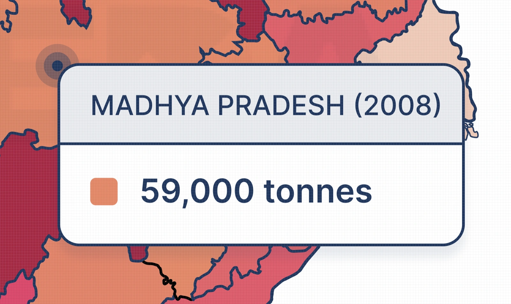
Context at the point of reading.
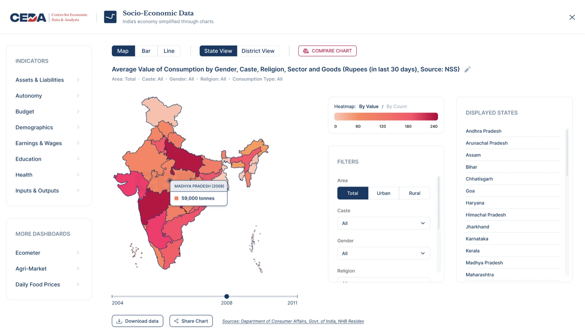
From one chart to two.
A broader perspective.
Bring another indicator into view, with room for its own context.

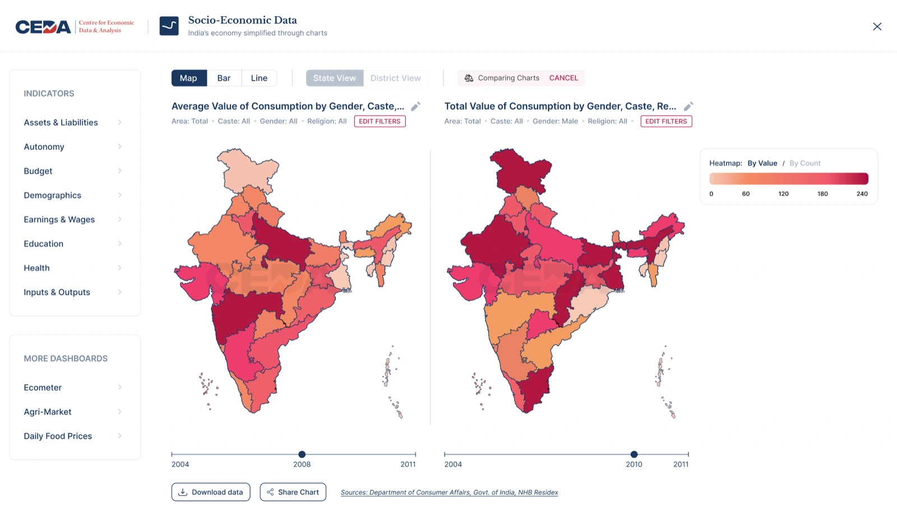

Delivered in full.Workspace, comparison, discovery and share exports.
Published by CEDA in March 2026.See the exported charts in public use
The starting point
The data was public.
Getting to it took work.
Journalists, researchers and government readers could get the same numbers elsewhere. CEDA’s old portal asked them to log in, configure a chart, then click “Get Visualization” to see it.
At kickoff, CEDA reported around two visitors a day. The brief was to make its dashboards easier to use, bring their visual language together, and help charts reach people beyond the portal.
Original interface
Before
Configure first. Then generate a chart.

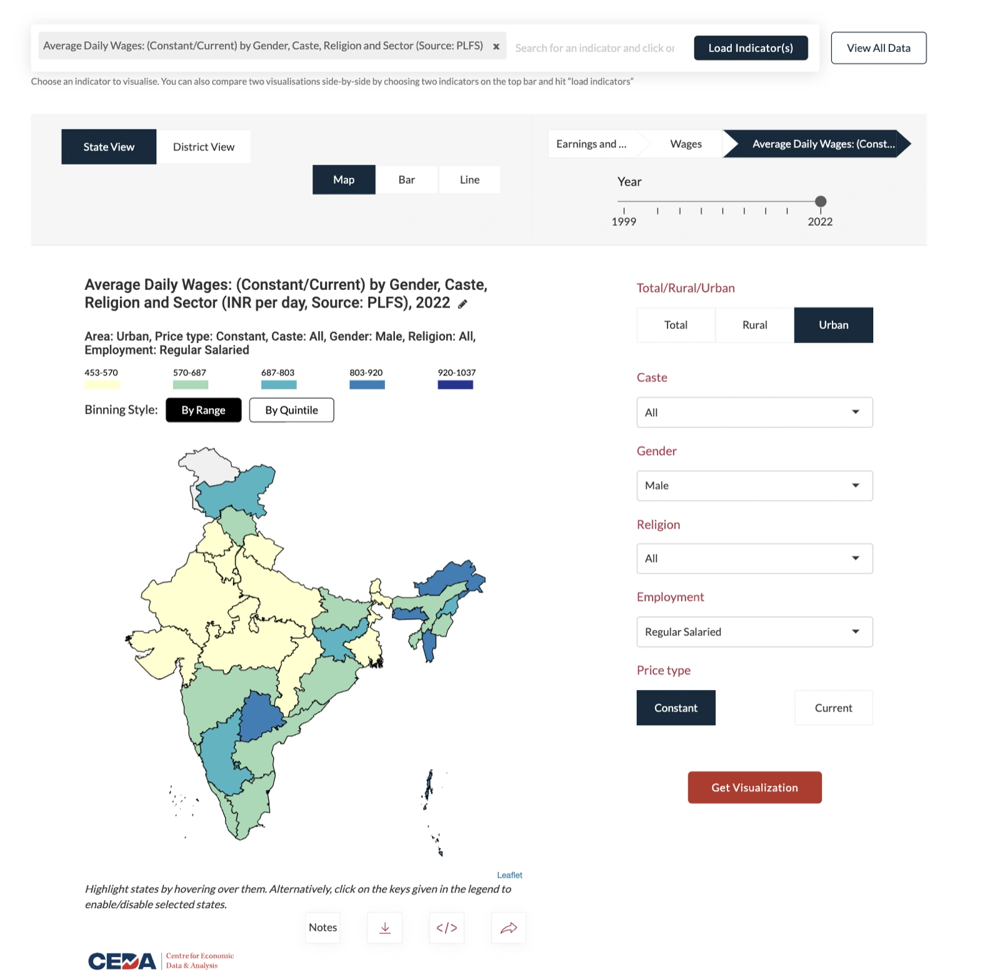
Enlarge screen ↗My redesign
After
Chart first. Controls in context.
≈2/ day
Visitors at kickoff.
Client-reported · September 2023
A gate before the value.
An account came before the data. Chart controls, notes and time were separated across the page.
A small team, an existing identity.
I worked within CEDA’s brand, with two developers and one department head. The handover for internal testing was on 15 April 2024.
Baseline: CEDA kickoff notes, 13 September 2023. The visitor count was reported by the client.
The workspace
Show the chart first.
Let the controls redraw it.
I made the chart the starting point and organised the controls around it. A change to an indicator, filter or year redraws the visualisation, removing the extra “Get Visualization” step.
The structure holds map, bar and line views at state and district level. The question, selected filters and source stay beside the result.
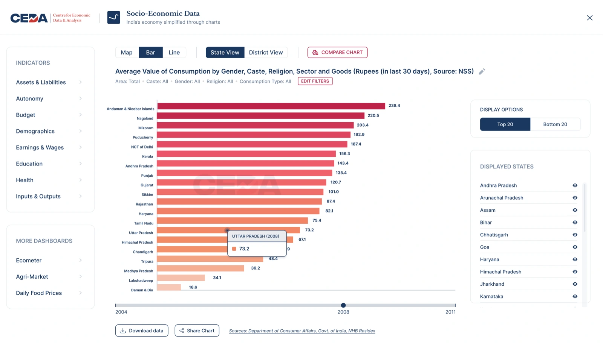
Clarity lives in the details.
Keep the context where the reader needs it.

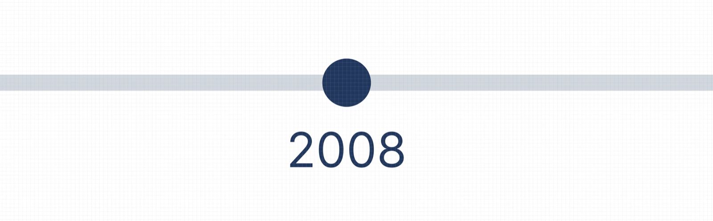
The boundary
I chose one non-scrolling workspace at desktop width. That keeps the controls in view, but the same arrangement needs separate validation on small screens.
Behind the workspace decision
“Should not wait for the user to click CTA every time they change some parameter”My first-impressions notes · 8 October 2023
The February 2024 inventory defined twelve parts: navigation, chart and geography selectors, title, selected context, chart, hover, timeline, download, share, heatmap, displayed states and filters.
The taxonomy also needed room to grow: my 4 March note identified nine existing categories against twelve in the data. Units, an India comparison value and legend logic were implementation dependencies.
Comparison
Make the second chart
as easy to find as the first.
Side-by-side comparison already existed. Its entry point was an instruction in the old top bar. I gave it an explicit “Compare Chart” action, then adapted the selection pattern from our earlier Ecometer work.
Search serves readers who know the indicator’s name; categories give everyone else a place to begin.

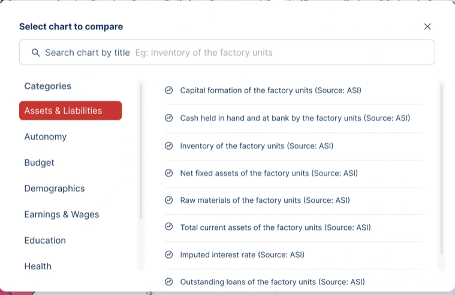
Two questions.
Room for both.
Each chart keeps its own filters and timeline. Linked highlighting follows the same geography across both maps.
The still shows the layout; linked highlighting is part of the shipped behaviour.
The tradeoff
Independent controls make comparison flexible, but allow different years and filters. I would test whether readers can explain a difference while accounting for each chart’s year, unit and scale.
Reuse, feedback and the shipped landing page
“Need a button to compare data - Same design as in ecometer - Popup with browsing as well as search capabilities”CEDA feedback · 8 October 2023
This was intentional reuse of a selection pattern, adapted to SEDP. The earlier Ecometer modal has category and market configuration; the supplied frame has no search field. These frames do not establish shared code.

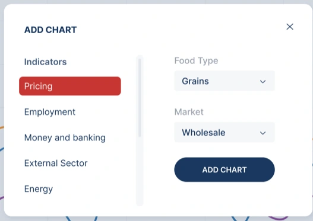
I also designed a discovery page for the first chart. CEDA’s feedback moved region selection into visible All / District / State controls and gave “Browse charts by source” its own section.

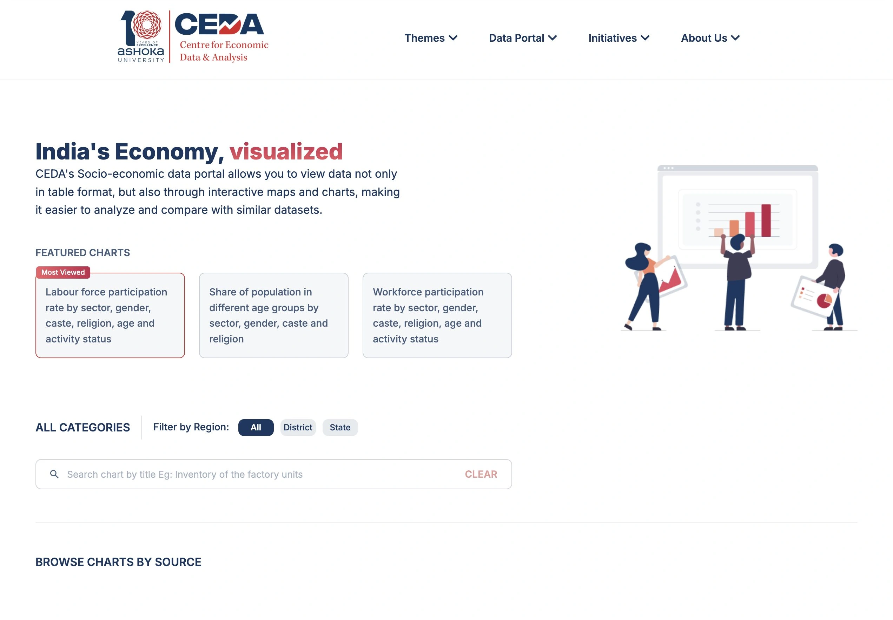
The chart that leaves
An exported chart
has to explain itself.
A reader on social media has none of the portal’s surrounding context. I designed the export as its own surface: the question, selected filters, labelled values, a readout and a route back to the data.
Keep the scope.
The indicator and selected filters tell readers what they are looking at.
Give the map meaning.
Labels, rankings, median, national average and legend support interpretation.
Leave a way back.
CEDA’s identity and portal link travel with the image.
The decision I held onto
The labels were the feature.
The export proved difficult to implement. I had positioned the labels and typography by hand; the values needed to populate from the selected chart. CEDA proposed exporting the heatmap alone.
That would remove the information that made the image readable outside the portal. I researched implementation approaches and worked with the developer until we could build the intended design.
“We have been able to find a way to show exactly how the design looked”My handover email note · 9 April 2024
From design to public use
The format travelled.
CEDA’s posts on 8 and 24 March 2026 use the self-contained export format, almost two years after handover.

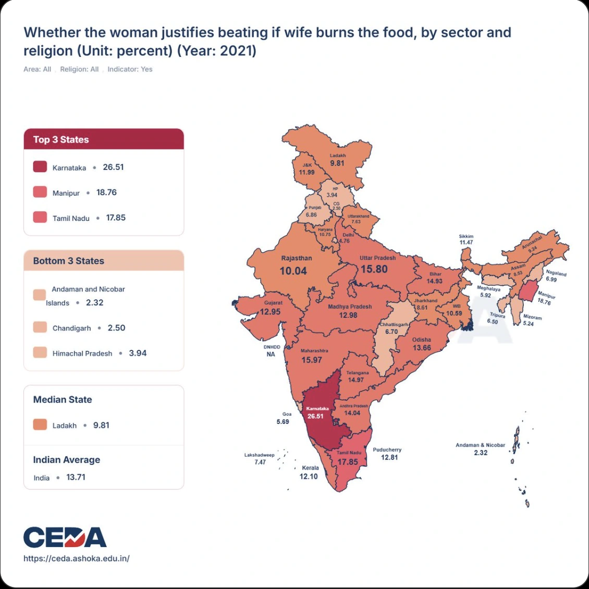


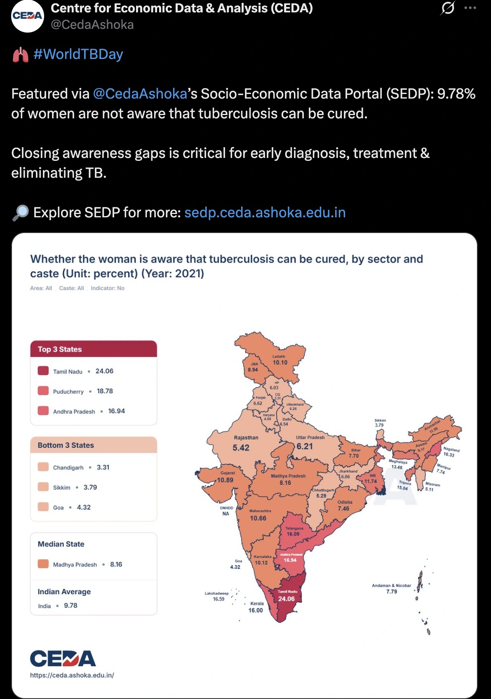

The published output includes year and unit in the title, two-decimal values, “Indian Average” and “NA” for missing data. These are visible production differences; I do not attribute those refinements to myself.
The bar and line export formats

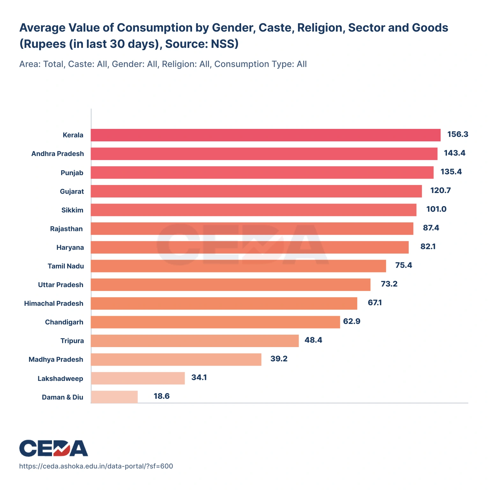

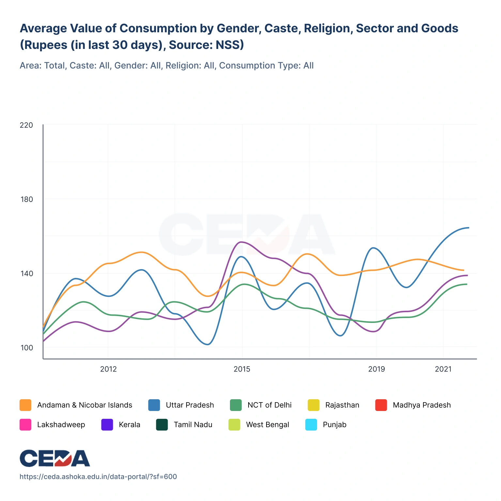
What changed
A shipped workspace.
An insight people could share.
Everything I designed for SEDP shipped: the chart workspace, comparison, discovery page and share exports. The March 2026 posts provide dated evidence of the export format’s use.
CEDA told me faculty across Ashoka used the dashboards for research and reported a broader audience through social-media engagement. I had no access to usage data after handover, so I claim no adoption or retention figures.
“We hired Priyank to redesign our dated suite of economic dashboards. And he did an excellent job. The redesigned dashboards are a treat to interact with.”
Ashoka University · Testimonial excerpt
What I would test next.
Whether readers understand comparisons with different years or filters. Whether a shared chart leads someone back to the data. And whether values remain accessible with a keyboard, without colour, and on a small screen.